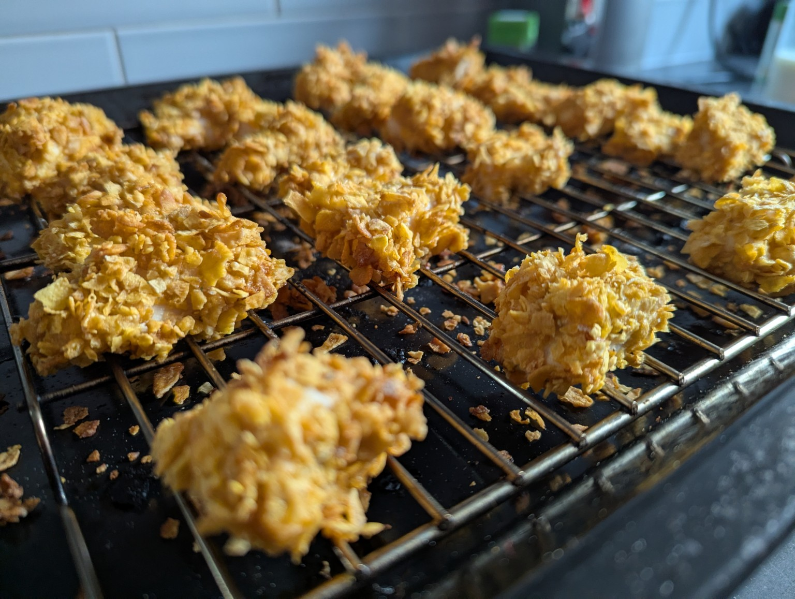
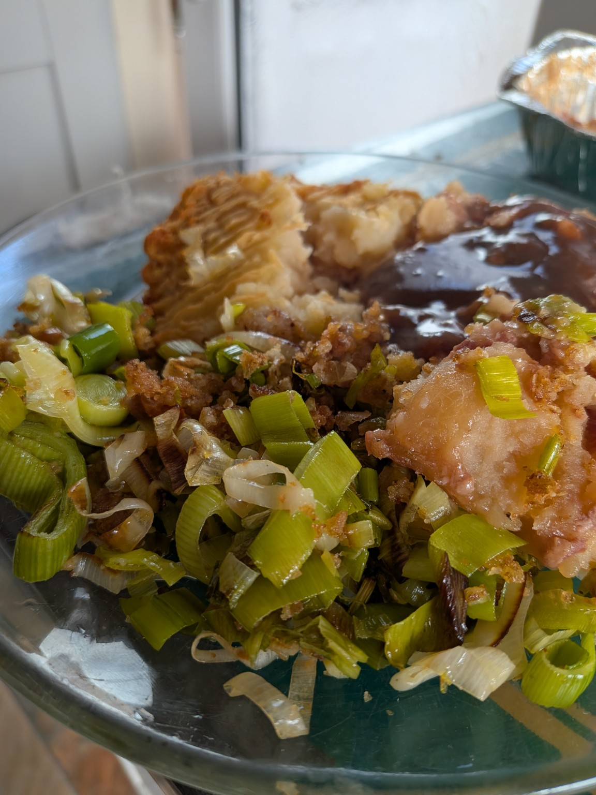
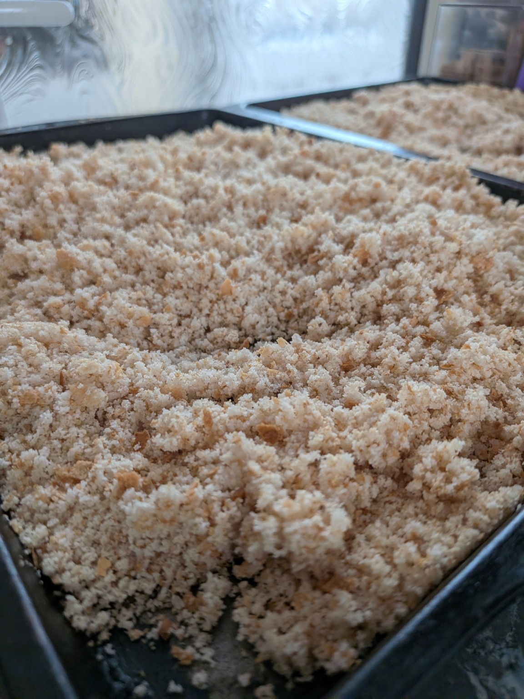

🥪
The IBS Lunch Box
How I plan breakfast and lunch for work and why portion sizes matter to me.
Read more →WELCOME TO IBS GIRL
My journey through IBS, becoming gluten-free, discovering foods that work for me, and learning that life can still be enjoyed.
START HERE
IBS can affect so many parts of daily life. This is where I share what I have learned, the foods and recipes that work for me, and the experiences that have helped me feel more confident again.
How my diagnosis changed the way I eat, plan and approach everyday life.
Read my story →Eating out with IBS and a gluten-free diet — what has helped me enjoy it again.
Read the latest post →
Simple ideas, freezer-friendly food and recipes I actually enjoy making.
Browse recipes →MY STORY
Welcome to IBS Girl! I started this blog to share my own experience of living with IBS and becoming gluten free.
From working out what foods my tummy will tolerate, to packing my breakfast and lunch for work, cooking gluten-free meals, eating out and going on holiday, I'm learning as I go.
This is a place for honest stories, practical ideas and recipes that have helped me along the way.
FROM THE BLOG
How I plan breakfast and lunch for work and why portion sizes matter to me.
Read more →The learning curve, checking labels and finding gluten-free foods I actually enjoy.
Read more →Planning ahead, checking menus and discovering that eating out is still possible.
Read more →My tips and experiences for travelling while trying to keep my tummy happy.
Read more →MY IBS JOURNEY
My first year of learning what works for my body, finding foods I can enjoy and getting to a place where IBS feels more manageable.
If someone had told me a few years ago that I'd be checking every food label before buying something, I probably wouldn't have believed them.
It's been a year since I was diagnosed with IBS after months—looking back, probably years—of wondering what was going on with my body. Finally having an answer changed everything.
Learning what you can and can't eat is a minefield. It wasn't easy, and there were plenty of moments where I felt frustrated because there never seemed to be a clear answer.
It didn't take me long to realise that bread and pasta were causing problems—and they were two of my favourite foods. Strangely, I found I could still eat cake and pastries without any issues, so you could say I'm "half gluten-free"! Even so, I'm always careful about what I eat, just in case.
Over the past year, I've tried lots of gluten-free breads, and I've settled on Warburtons as my favourite. Oaf also does really nice rolls. Thankfully, I think gluten-free pasta tastes just the same as regular pasta, so that's one swap I don't mind making.
There are other foods that don't agree with me too. Sweetcorn and avocado are two of my favourites that I can no longer eat, which is disappointing. That's one of the tricky things about IBS—everyone's triggers are different, and what works for one person won't necessarily work for someone else.
For me, going gluten-free has made a huge difference, but it's only one part of managing my symptoms. Listening to my body, reducing stress where I can, and making mindful food choices have all played an important role.
Going gluten-free wasn't something I ever planned to do, but it has become part of my lifestyle, and for me, it's been one of the best decisions I've made for my health.
My advice is simple: be patient with yourself. Finding what works takes time, and it's okay if the journey isn't straightforward. Celebrate the small wins, whether that's enjoying a meal without discomfort or making it through the day feeling more like yourself.
It's been a long journey to get to this point, but I finally feel like I understand my triggers and know how to manage them. If we're going out for the day, I try not to worry about where the nearest toilet is because I don't want that fear to ruin the experience. Of course, it's always reassuring to know where one is if I need it, but after a year, I finally feel like my IBS is at a level I can cope with.
If you're reading this because you're struggling with IBS, I want you to know that you're not alone. It can feel overwhelming at first, but it does get easier as you learn what works for you. Be kind to yourself, take it one step at a time, and remember—you've got this.
← Back to blogsEATING OUT
Living with IBS while following a gluten-free diet can make eating out feel overwhelming, but it doesn't have to stop you enjoying meals with family and friends.
Don't let it ruin eating out. Places are getting so much better at catering for food allergies these days. Although gluten-free menus are often smaller than your friends' menus, there will almost always be something you can enjoy.
Most restaurants have their menus available online, so you can check in advance to see if they have something suitable for you. If you need something specific, don't be afraid to call ahead and speak to a member of staff. They are often very helpful and happy to answer any questions or make arrangements where they can.
After being diagnosed, the first time I went out for lunch with my mum was at Prezzo. The waiter asked if we had any food allergies and, as soon as I said I needed gluten-free food, he said, "That's fine," and brought over a different menu. It was very similar to my mum's menu, with just a few dishes removed. I had a really lovely gluten-free pasta dish, and it made me realise that eating out wasn't going to be as difficult as I'd feared.
Since then, I've been to a few different places for lunch and dinner, and I've generally had good experiences. Many menus are clearly labelled with gluten-free options, making it much easier to choose. Sometimes it can be a little disappointing when you fancy something like chips but can't have them because they're cooked in the same fryer as gluten-containing foods. Instead, you might have a jacket potato or boiled potatoes. Even so, there's usually something tasty to enjoy.
We recently stayed at Portmeirion for two nights and had dinner in the café, which served pasta, pizza and salads. When I booked the table, I mentioned that I needed gluten-free food. The waiter told me that, apart from two dishes, I could have everything on the menu. I chose mushrooms in a truffle sauce on bruschetta, and they simply swapped the regular bread for gluten-free bread. It was absolutely delicious, and I didn't feel like I was missing out at all.
At breakfast in the hotel, all I had to do was ask for gluten-free toast, and it was brought out without any fuss. The staff couldn't have been more accommodating, and the whole experience made eating away from home feel easy and enjoyable.
When it comes to lunch out, sandwiches are often the easiest option, but they can be quite hit and miss when you need gluten-free choices. I have had some really nice gluten-free sandwiches from Marks & Spencer, especially a simple cheese and tomato one, which feels like a safe and reliable choice. However, a lot of shops tend to focus on things like chicken and bacon, and for someone who doesn't like bacon, that can be really unhelpful.
Boots, for example, do a chicken and spinach sandwich, but sometimes it feels like there is more spinach than chicken, and it can give the impression that gluten-free options are just thrown together without much thought. At times it really does feel like people with dietary needs have been forgotten about, rather than properly catered for.
A few weeks ago, I was in London and walked past a Pret a Manger. I went in because it was lunchtime and I was hungry. I asked the girl who was filling up the shelves where the gluten-free sandwiches were, and the manager came over and said, quite bluntly, that they don't do them and why would they have that kind of bread there. I ended up leaving hungry and a bit frustrated.
In the end, I went to the Marks & Spencer café instead and had the best New Yorker sandwich, which completely made up for the earlier disappointment and reminded me that there are still places where you can get something really enjoyable and feel properly catered for.
Don't let eating out put you off. Restaurants are becoming much more aware of food allergies and gluten-free diets, and you'll usually find there is something you can enjoy. Remember, you're there to spend time with your friends and have a good time, not just for the food.
If a restaurant doesn't have enough suitable options, don't be afraid to suggest somewhere else. Most friends are understanding and will be happy to choose a place where everyone can eat comfortably. With a little planning and a bit of confidence, eating out can still be an enjoyable part of life. Just because you're gluten-free doesn't mean you have to miss out.
← Back to blogsGLUTEN-FREE COOKING
Simple food I enjoy making, with plenty of freezer-friendly ideas for easier days.
Crispy cornflake-coated chicken strips that can be baked or air fried — and they're freezer friendly too.
Freezer friendly: Allow to cool, freeze, then reheat thoroughly until piping hot throughout.

A quick side dish made with buttery leeks, crisp gluten-free breadcrumbs and Parmesan.

A handy way to use up gluten-free bread and keep a supply of breadcrumbs ready in the freezer.
GET IN TOUCH
Have an IBS story, gluten-free tip or recipe idea? Send me a message.